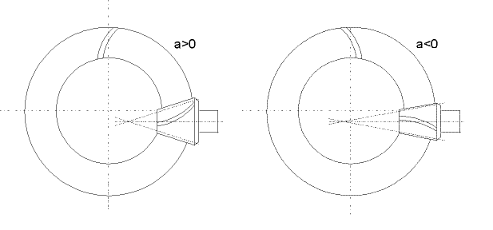

|
|
|


偏置距
对于锥齿轮，偏置距为 0。对于准双曲面齿轮，偏置距大于或小于 0。这种应用使您能够获得更高的重合度和更大的齿根强度。它主要用于汽车工程（见图 16.5）。
注意
准双曲面锥齿轮几乎总是采用正的准双曲面偏置距，因为这是实现上述特性改进的唯一途径。

图 16.5：准双曲面锥齿轮配置。正偏置距（a > 0）：齿轮 1 左旋，齿轮 2 右旋。负偏置距（a < 0）：齿轮 1 右旋，齿轮 2 左旋
Offset
The offset is 0 for bevel gears. The offset for hypoid gears is greater than or less than 0. This application enables you to achieve higher contact ratios and greater strength at the tooth root. It is primarily used in automotive engineering (see Figure 16.5).
Note
A positive hypoid offset is almost always applied to hypoid bevel gears, because this is the only way of achieving the improvements to the characteristics described above.
Figure 16.5: Hypoid bevel gear configurations. Positive offset (a > 0): Gear 1 left-hand spiral, Gear 2 right-hand spiral. Negative offset (a < 0): Gear 1 right-hand spiral, Gear 2 left-hand spiral